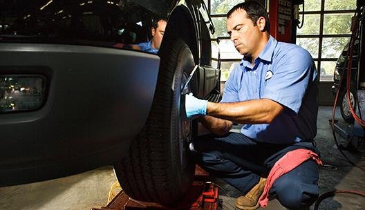

Chapa y pintura
Traé tu auto y te armamos un presupuesto acorde a el daño de tu auto. En caso de que haya que hacer más de una reparación nos adaptamos a cada situación y planteamos un orden de prioridades para que puedas ir arreglándolo por partes. Comunicate con nosotros para coordinar una visita, revisaremos el auto en el momento y te enviaremos un presupuesto a la brevedad.
Servicio Mecánico
Depende el auto que tengas cada tantos kilometros debes realizarle un servicio de mantenimiento. Comunicate con nosotros para que te hagamos un presupuesto del servicio que necesitas. Además del servicio estipulado según los kms de tu auto podes llamarnos por cualquier trabajo de mecánica ligera: Chequeo general, cambio de filtros, control de aceite, lubricación, pastillas de freno, líquido de freno, control y reparación de luces, asuntos eléctricos, alineación y balanceo. Consultanos por otros trabajos.Gestión de Siniestros
Nos encargamos de toda la gestión.
- 1. Contactanos en el momento del choque y te aconsejaremos sobre los pasos a seguir.
- 2. Coordinaremos una visita al taller, en caso de no puedas traer el auto, lo vamos a buscar.
- 3. Evaluaremos el siniestro y realizaremos un presupuesto para presentarle a la compañia de seguros.
- 4. Una vez que la compañía de seguros apruebe el arreglo te contactaremos para poder comenzar con las reparaciones.
- 5. Arreglaremos el auto y te avisaremos cuando esté pronto.
- 6. Retirarás tu auto como si nunca hubieses chocado.